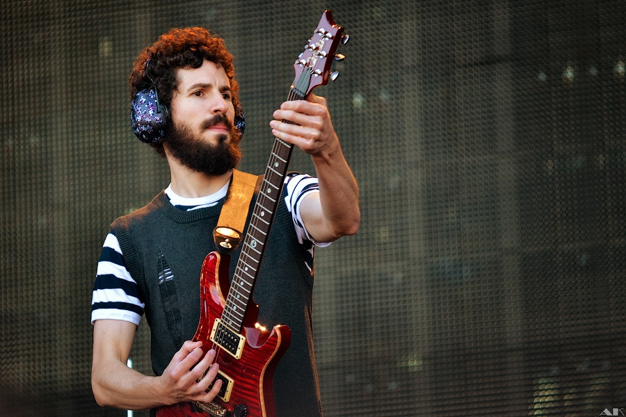
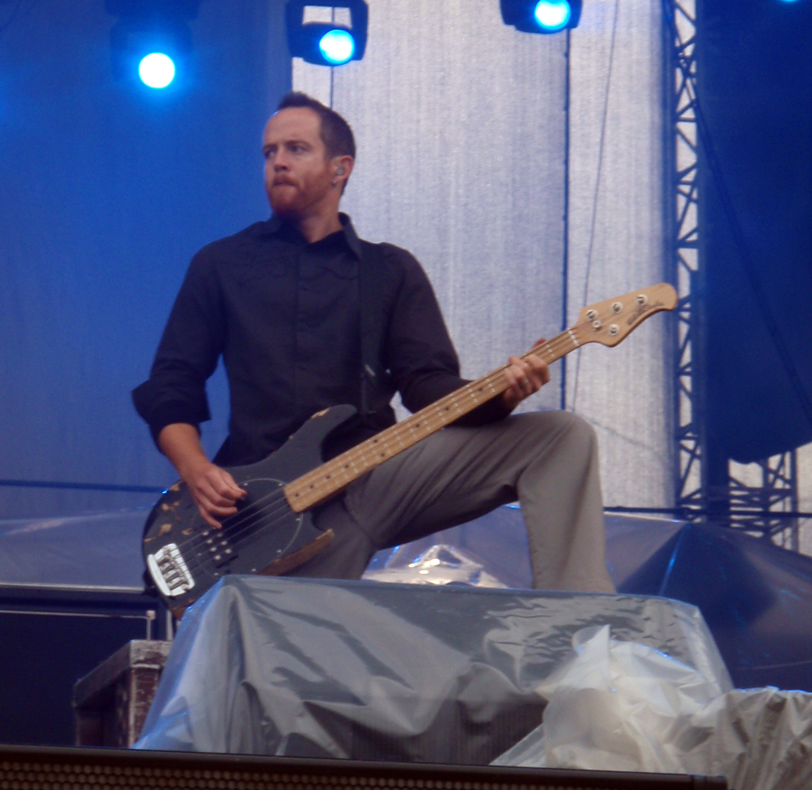

Chester Charles Bennington (Phoenix, 20 de marzo de
1976-Palos Verdes, 20 de julio de
2017), fue un músico,
cantante,
compositor y actor estadounidense, conocido por haber sido el vocalista principal y compositor de la banda
Linkin
Park, además de otros grupos como Dead By Sunrise, Grey Daze, Stone Temple Pilots.
Bennington ganó prominencia como vocalista luego del lanzamiento del álbum debut de Linkin Park, Hybrid
Theory,
en
2000, que se convirtió en un éxito comercial, siendo el álbum debut más vendido de la década, así como uno
de
los
pocos álbumes que alcanzaron tantas ventas. Además de Hybrid Theory (2000), Bennington grabó con Linkin Park
un
total de 7 álbumes de estudio; Meteora (2003), Minutes to Midnight (2007), A Thousand Suns (2010), Living
Things
(2012), The Hunting Party (2014) y One More Light (2017).
Chester Bennington formó su propia banda, Dead By Sunrise, como un proyecto paralelo en 2005. También fue el
cantante principal de Stone Temple Pilots en 2013 hasta 2015. La revista Hit Parader lo colocó en el puesto
46 en la lista de Los 100 mejores vocalistas del Metal de todos los tiempos.2
Falleció a causa de suicidio por ahorcamiento el día 20 de julio de 2017, en su residencia de Palos Verdes,
California, a los 41 años de edad.
Rob Bourdon
Robert Gregory «Rob» Bourdon (Calabasas, California; 20
de enero de 1979) es el
baterista de la banda
alternativa Linkin Park.
Robert Gregory Bourdon nació el 20 de enero de 1979. Rob nació en Calabasas, California y ahora vive en Los
Ángeles. Su padres son Gregory y Patty; tiene un hermano menor llamado Dave. Creció en la misma ciudad que
los miembros de Incubus y fue a la escuela con los miembros de Hoobastank.
Rob comenzó a tocar la batería a la edad de 10 años tras ver un concierto de Aerosmith. Ya que su madre,
Patty, fue la exnovia de Joey Kramer, el baterista de Aerosmith, Bourdon pudo estar en el backstage y ver
toda la producción. Kramer también dio a Rob un pedal de bombo. A Rob también le gusta tocar piano cuando
tiene tiempo. Rob acostumbraba a tomar lecciones cuando era joven y forzado a seguir.
En sus primeros años de adolescencia, Bourdon tocó en algunas bandas con sus amigos. Fue en esa época que
conoció a su actual compañero de banda Linkin Park, Brad Delson, y tocaron juntos durante un año en un grupo
llamado Relative Degree. Su meta era tocar en el Teatro Roxy, después de lograr su objetivo con un
espectáculo sell-out, Relative Degree finalmente se disolvió. En 1995, Delson, Mike Shinoda y Bourdon
formaron Xero que se convertiría en el punto de partida para Linkin Park.
El grupo finalmente firmó con Warner Bros. y lanzó en 2000 su álbum debut, Hybrid Theory.12 Se convirtió
en un éxito; llegó a la posición número dos del Billboard 200, y uno de sus sencillos, «In the End», llegó
al segundo lugar del Billboard Hot 100, siendo el mayor éxito de su carrera. Posterior a esto, lanzaron
siete álbum de estudio —Meteora (2003), Minutes to Midnight (2007) A Thousand Suns (2010) Living Things
(2012), The Hunting Party (2014) y One More Light (2017). —, de los cuales todos lograron el número uno en
la principal lista musical de Estados Unidos. Además, en Reino Unido todos sus discos de estudios, junto a
dos álbumes de remezclas Reanimation (2002) y Recharged (2013), han entrado en los primeros cinco lugares
del UK Albums Chart.
Es el baterista y miembro más joven y alto de la banda de rock Linkin Park. Él es en general, el más callado
de la banda.
Brad Delson
Bradford Phillip Delson, conocido como "BBB (Big Bad
Brad)" (1 de diciembre de 1977), es el guitarrista líder
de la banda de rock, Linkin Park. También es el A&R de Machine Shop Recordings.

En 1999, la banda de Delson, Xero, reemplazó al exvocalista de Mark Wakefield con el natal de Arizona
Chester Bennington y cambió su nombre por Hybrid Theory. En poco tiempo, Delson, junto con Shinoda, había
producido el Hybrid Theory de seis pistas (EP), su distribución a distintos sitios web en línea y ganar
culto de su propia banda. En el año 2000, después de un cambio más del nombre de la banda, Linkin Park fue
firmado por Warner Bros. Records. El 24 de octubre de 2000, Linkin Park lanzó el éxito abrumador: Hybrid
Theory. Durante el próximo año, Delson ayudó a producir el álbum remix "Reanimation" (2002), y añadió su
propia visión creativa en la interpretación remezclada de "Pushing Me Away" ("P5hng Me A * wy"). Después de
Reanimation, Delson jugó un papel clave en la producción de segundo álbum de estudio de Linkin Park, Meteora
(2003), que contó con más pesados riffs de guitarra que los de Hybrid Theory.
Linkin Park lanzó su tercer álbum de estudio de Minutes to Midnight el 15 de mayo de 2007 en los Estados
Unidos. Para este álbum, la banda se apartó del estilo del estilo nu metal que habían perfeccionado en
Hybrid Theory y Meteora, y desarrolló un sonido completamente nuevo. Para Delson, esto significa
experimentar con diferentes guitarras y amplificadores, tanto nuevos como antiguos. También significó que
tenía que hacer a un lado su aversión por los solos de guitarra, que se presentan en canciones como Shadow
of the Day, What I've Done, "In Pieces" y "The Little Things Give You Away".
Mientras que la banda reconstruido la canción "The Little Things Give You Away", Delson experimentado con un
E-Bow, la creación de una canción llamada "E-Bow Idea", que más tarde fue cambiado a No More Sorrow. Los
oyentes también pueden oírlo tintinear sus llaves en Given Up, una idea que se le atribuye en el folleto del
álbum, así como las múltiples pistas de las manos aplaudiendo. También ha tocado el piano en algunos de los
espectáculos en vivo en la canción Hands Held High.
Brad también añadió su propia visión creativa en New Divide, la canción compuesta por Linkin Park para
Transformers: La Venganza de los Caídos en 2009. También fue el último single de la banda antes de que
tomaran caminos separados, lejos de sus proyectos para componer la música para su próximo disco - A Thousand
Suns.
Normalmente, a Delson suele verse con un par de grandes auriculares, que son diseñados por Shinoda y cambian
con cada lanzamiento. En el disco Road to Revolution: Live at Milton Keynes afirma que los auriculares le
permiten entrar en la matriz y que de no usarlos no estaría en completa sincronización con la banda.
Dave Farrell
David Michael Farrell (Plymouth, Massachusetts, 8 de febrero de 1977), más conocido como Phoenix, es el

bajista del grupo de rock alternativo estadounidense Linkin Park. Actualmente forma parte del podcast de
golf "Member Guest".
Farrell fue miembro de un grupo de ska cristiano conocido como Tasty Snax. Mientras asistía a la
universidad, practicaba con Brad Delson "tocando el bajo de Brad en su habitación". A pesar de esto, como
tenía que viajar con su banda, los Tasty Snax, no pudo tocar con Delson y su banda, que se convertiría en
Linkin Park. Tras cambiar su nombre a Snax, Farrell comenzó a tocar el bajo en la banda antes de abandonarla
de nuevo para unirse a Linkin Park.
El grupo finalmente firmó con Warner Bros. y lanzó en 2000 su álbum debut, Hybrid Theory. Se convirtió en
un éxito; llegó a la posición número dos del Billboard 200, y uno de sus sencillos, «In the End», llegó al
segundo lugar del Billboard Hot 100, siendo el mayor éxito de su carrera. Posterior a esto, lanzaron siete
álbum de estudio —Meteora (2003), Minutes to Midnight (2007) A Thousand Suns (2010), Living Things (2012),
The Hunting Party (2014) y One More Light (2017)—,456 de los cuales todos lograron el número uno en la
principal lista musical de Estados Unidos.7 Además, en Reino Unido todos sus discos de estudios, junto dos
álbumes de remezclas Reanimation (2002) y Recharged (2013), han entrado en los primeros cinco lugares del UK
Albums Chart.
Joe Hahn
Joseph Hahn, conocido también como Joe
Hahn, Chairman Hahn o Mr. Hahn (Dallas, Texas, 15 de marzo de 1977) es
un director de videos musicales, también conocido como el DJ en la banda Linkin Park. Joe tiene un alter ego
llamado Remy.
Hahn se graduó de la Herbert Hoover High School en Glendale en 1995. Luego estudió en el Art Center College
of Design de Pasadena, pero no se graduó. Hahn se unió a Linkin Park, llamada en ese entonces Xero, en 1997
como el DJ de la banda. Desde entonces, él ha dirigido la mayoría de los videos de la banda (excepto "One
Step Closer","Crawling","Faint","Given Up" y "We Made It"). Hahn, junto con su compañero de banda Mike
Shinoda, es responsable de la mayor parte de las ilustraciones de los álbumes de Linkin Park. Además,
participó con Mike Shinoda en su producción The Rising Tied, del proyecto alterno de Hip Hop Fort Minor. A
Joe se le ocurrió el concepto de One Step Closer y ha estado involucrado en todos los demás videos. Él es el
director oficial de los videos para la banda.
Hahn se convirtió en el primer coreano estadounidense en recibir un Grammy cuando la banda ganó el premio
2002 de Mejor Interpretación de Hard Rock
Mike Shinoda
Michael Kenji «Mike» Shinoda (Agoura
Hills, California, 11 de febrero de 1977)1 es un músico
multinstrumentista, cantante, compositor, rapero y productor discográfico estadounidense, integrante de la
banda Linkin Park y proyecto alternativo en solitario Fort Minor.
Mike es el MC, cantante, productor musical, tecladista y guitarrista rítmico de Linkin Park. En la
secundaria, conoció y se hizo amigo de Brad Delson. Posteriormente, junto con Brad y Rob Bourdon iniciaron
la banda Xero. En el colegio al que Shinoda asistía, Art Center School, conoció al DJ Joe Hahn, el cual se
unió a Xero. Por otro lado, Delson conoció al bajista Dave «Phoenix» Farrell en la universidad, que también
fue reclutado para la banda. El grupo después pasó a llamarse Linkin Park y en 1999 se unió el
vocalista Chester Bennington, reemplazando a Mark Wakefield, quién dejó la banda después del poco interés
por parte de las compañías discográficas en su primer trabajo, Xero.
El grupo finalmente firmó con Warner Bros. y lanzó en 2000 su álbum debut, Hybrid Theory. Se convirtió en
un éxito; llegó a la posición número dos del Billboard 200, y uno de sus sencillos, «In the End», llegó al
segundo lugar del Billboard Hot 100, siendo el mayor éxito de su carrera. Posterior a esto, lanzaron seis
álbum de estudio. Meteora (2003), Minutes to Midnight (2007), A Thousand Suns (2010), Living Things (2012),
The Hunting Party (2014) y por último One More Light (2017) de los cuales todos lograron el número uno en la
principal lista musical de Estados Unidos. Además, en Reino Unido todos sus discos de estudios, junto al
álbum de remezclas Reanimation, han entrado en los primeros cinco lugares del UK Albums Chart.
 compositor y actor estadounidense, conocido por haber sido el vocalista principal y compositor de la banda
Linkin
Park, además de otros grupos como Dead By Sunrise, Grey Daze, Stone Temple Pilots.
Bennington ganó prominencia como vocalista luego del lanzamiento del álbum debut de Linkin Park, Hybrid
Theory,
en
2000, que se convirtió en un éxito comercial, siendo el álbum debut más vendido de la década, así como uno
de
los
pocos álbumes que alcanzaron tantas ventas. Además de Hybrid Theory (2000), Bennington grabó con Linkin Park
un
total de 7 álbumes de estudio; Meteora (2003), Minutes to Midnight (2007), A Thousand Suns (2010), Living
Things
(2012), The Hunting Party (2014) y One More Light (2017).
compositor y actor estadounidense, conocido por haber sido el vocalista principal y compositor de la banda
Linkin
Park, además de otros grupos como Dead By Sunrise, Grey Daze, Stone Temple Pilots.
Bennington ganó prominencia como vocalista luego del lanzamiento del álbum debut de Linkin Park, Hybrid
Theory,
en
2000, que se convirtió en un éxito comercial, siendo el álbum debut más vendido de la década, así como uno
de
los
pocos álbumes que alcanzaron tantas ventas. Además de Hybrid Theory (2000), Bennington grabó con Linkin Park
un
total de 7 álbumes de estudio; Meteora (2003), Minutes to Midnight (2007), A Thousand Suns (2010), Living
Things
(2012), The Hunting Party (2014) y One More Light (2017).
 Rob comenzó a tocar la batería a la edad de 10 años tras ver un concierto de Aerosmith. Ya que su madre,
Patty, fue la exnovia de Joey Kramer, el baterista de Aerosmith, Bourdon pudo estar en el backstage y ver
toda la producción. Kramer también dio a Rob un pedal de bombo. A Rob también le gusta tocar piano cuando
tiene tiempo. Rob acostumbraba a tomar lecciones cuando era joven y forzado a seguir.
Rob comenzó a tocar la batería a la edad de 10 años tras ver un concierto de Aerosmith. Ya que su madre,
Patty, fue la exnovia de Joey Kramer, el baterista de Aerosmith, Bourdon pudo estar en el backstage y ver
toda la producción. Kramer también dio a Rob un pedal de bombo. A Rob también le gusta tocar piano cuando
tiene tiempo. Rob acostumbraba a tomar lecciones cuando era joven y forzado a seguir.  un director de videos musicales, también conocido como el DJ en la banda Linkin Park. Joe tiene un alter ego
llamado Remy.
un director de videos musicales, también conocido como el DJ en la banda Linkin Park. Joe tiene un alter ego
llamado Remy.
 Hills, California, 11 de febrero de 1977)1 es un músico
multinstrumentista, cantante, compositor, rapero y productor discográfico estadounidense, integrante de la
banda Linkin Park y proyecto alternativo en solitario Fort Minor.
Hills, California, 11 de febrero de 1977)1 es un músico
multinstrumentista, cantante, compositor, rapero y productor discográfico estadounidense, integrante de la
banda Linkin Park y proyecto alternativo en solitario Fort Minor.